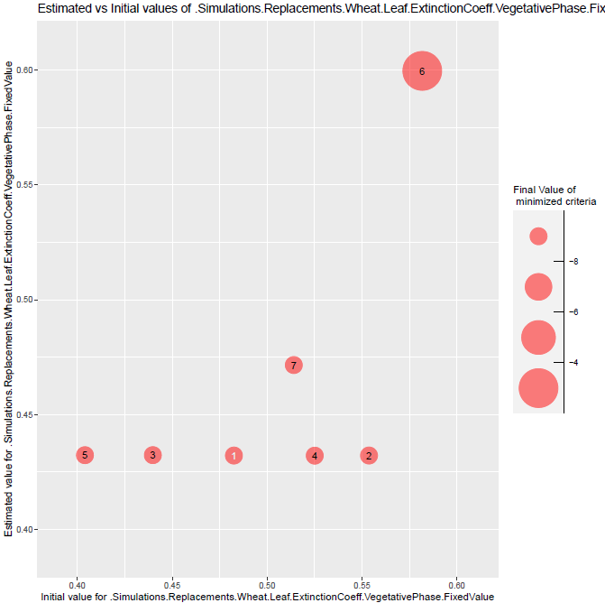
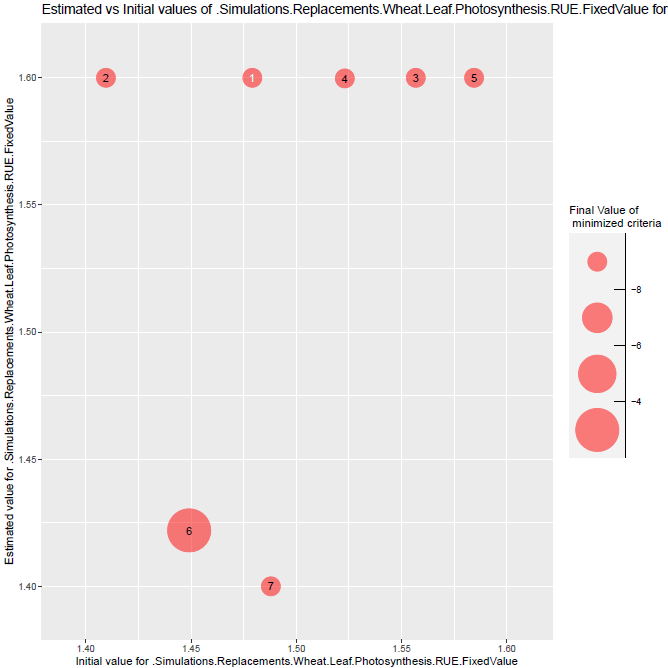

vignettes/ApsimX_parameter_estimation_simple_case.Rmd
ApsimX_parameter_estimation_simple_case.RmdA simple parameter estimation with a single situation, a single observed variable and 2 estimated parameters, just to illustrate how to use the package with the ApsimX model.
The parameter estimation is performed using the Nelder-Mead simplex method implemented in the nloptr package.
# Install and load the needed libraries
if(!require("CroptimizR")){
devtools::install_github("SticsRPacks/CroptimizR@*release")
library("CroptimizR")
}
if(!require("CroPlotR")){
devtools::install_github("SticsRPacks/CroPlotR@*release")
library("CroPlotR")
}
if(!require("ApsimOnR")){
devtools::install_github("hol430/ApsimOnR")
library("ApsimOnR")
}
if(!require("dplyr")){
install.packages("dplyr",repos="http://cran.irsn.fr")
library("dplyr")
}
if(!require("ggplot2")){
install.packages("ggplot2",repos="http://cran.irsn.fr")
library("ggplot2")
}
if(!require("gridExtra")){
install.packages("gridExtra",repos="http://cran.irsn.fr")
library("gridExtra")
}
# DEFINE THE PATH TO THE LOCALLY INSTALLED VERSION OF APSIM (should be something like C:/path/to/apsimx/bin/Models.exe on windows, and /usr/local/bin/Models on linux)
apsimx_path <- "D:\\Home\\sbuis\\Documents\\OUTILS\\APSIM2021.01.20.5937\\Bin\\Models.exe"
sit_name="GattonRowSpacingRowSpace25cm" # among "GattonRowSpacingRowSpace25cm", "GattonRowSpacingRowSpace50cm","GattonRowSpacingRowSpaceN0"
var_name = c("Wheat.Leaf.LAI") # or "Wheat.AboveGround.Wt"In this case, the argument param_values of the wrapper is not set: the values of the model input parameters are all read in the model input files.
# Set the model options (see '? apsimx_wrapper_options' for details)
files_path <- system.file(file.path("extdata","apsimx_files"),package = "ApsimOnR")
apsimx_file <- file.path(files_path, "template.apsimx")
# Setting met files path
met_files_path <- files_path
# Setting observed data files path
obs_files_path <- files_path
# Setting sqlite db tables names
predicted_table_name <- "DailyReport"
observed_table_name <- "Observed"
model_options=apsimx_wrapper_options(apsimx_path = apsimx_path,
apsimx_file = apsimx_file,
variable_names = var_name,
predicted_table_name = predicted_table_name,
met_files_path = met_files_path,
observed_table_name = observed_table_name,
obs_files_path = obs_files_path)
# Run the model (on all situations found in the apsimx_file)
sim_before_optim=apsimx_wrapper(model_options=model_options)We only keep observations for situation sit_name and variable var_name (obs_list defines the list of situations and variables that will be used in the parameter estimation process).
# At the moment, observed data are read from the db file after the first simulation ran before optimization.
#But they may be loaded using the original xlsx data file (from the files_path)
obs_list <- read_apsimx_output(sim_before_optim$db_file_name,
model_options$observed_table_name,
model_options$variable_names,
names(sim_before_optim$sim_list))
obs_list=filter_obs(obs_list, sit_names=sit_name,include=TRUE)param_info must contain information about the parameters that will be estimated in the parameter estimation process from the situations, variables and dates defined in obs_list.
It must include the definition of their upper and lower bounds (-Inf and Inf can be used). This will determine the list of estimated parameters.
Initial values for the minimization can also be provided in param_info (see ? estim_param).
# 2 parameters here: ExtinctionCoeff and RUE, of bounds [0.4,0.6] and [1.4,1.6]
param_info <-
list(lb=c(.Simulations.Replacements.Wheat.Leaf.ExtinctionCoeff.VegetativePhase.FixedValue=0.4,
.Simulations.Replacements.Wheat.Leaf.Photosynthesis.RUE.FixedValue=1.4),
ub=c(.Simulations.Replacements.Wheat.Leaf.ExtinctionCoeff.VegetativePhase.FixedValue=0.6,
.Simulations.Replacements.Wheat.Leaf.Photosynthesis.RUE.FixedValue=1.6))optim_options should contain the options of the parameter estimation method. Here we defined a few options for the simplex method of the nloptr package (default method in estim_param). The full set of options for the simplex method can be found in the vignette of nloptr package.
The number of repetitions nb_rep is advised to be set at least to 5, while 10 is a reasonable maximum value. maxeval should be used to stop the minimization only if results have to be produced within a given duration, otherwise set it to a high value so that the minimization stops when the criterion based on the relative tolerance xtol_rel is satisfied.
optim_options=list()
optim_options$nb_rep <- 7 # Number of repetitions of the minimization
# (each time starting with different initial
# values for the estimated parameters)
optim_options$maxeval <- 500 # Maximum number of evaluations of the
# minimized criteria
optim_options$xtol_rel <- 1e-03 # Tolerance criterion between two iterations
# (threshold for the relative difference of
# parameter values between the 2 previous
# iterations)
optim_options$path_results <- getwd() # path where to store the results (graph and Rdata)
optim_options$ranseed <- 1234 # set random seed so that each execution give the same results
# If you want randomization, don't set it.The Nelder-Mead simplex is the default method => no need to set the optim_method argument if you want to use it. The list of available methods is detailed here. Same for crit_function: a value is set by default (crit_log_cwss, see ? crit_log_cwss or here for more details and list of available criteria). Others will be proposed in next versions of CroptimizR. The user can implement and give in argument its own criterion (see inputs and outputs required in the crit_log_cwss function).
res=estim_param(obs_list=obs_list,
model_function=apsimx_wrapper,
model_options=model_options,
optim_options=optim_options,
param_info=param_info)The estimated values of the parameters are the following:
res$final_values## .Simulations.Replacements.Wheat.Leaf.ExtinctionCoeff.VegetativePhase.FixedValue
## 0.4321273
## .Simulations.Replacements.Wheat.Leaf.Photosynthesis.RUE.FixedValue
## 1.6000000Complementary graphs and data are stored in the folder which path is given in optim_options$path_results. Among them, the EstimatedVSinit.pdf file contains the following figures:

Figure 1: plots of estimated vs initial values of parameters ExtinctionCoeff and RUE. Numbers represent the repetition number of the minimization and the size of the bubbles the final value of the minimized criterion. The number in white, 2 in this case, is the minimization that lead to the minimal value of the criterion among all repetitions. In this case, minimizations converge towards different values for the parameters (3 for ExtinctionCoeff and 2 for RUE), which indicates the presence of local minima. Values of RUE are very close to the upper bound value. In realistic calibration cases this may indicate the presence of a large error in the observation values or in the simulated output values (this simple case with only one situation does not allow to derive such conclusion).
In this case, the param_values argument is set so that estimated values of the parameters overwrite the values defined in the model input file (’.apsimx`).
sim_after_optim=apsimx_wrapper(param_values=res$final_values,
model_options=model_options)Here we use the CroPlotR package for comparing simulations and observations. As CroptimizR, CroPlotR can be used with any crop model.
p <- plot(sim_before_optim$sim_list, obs=obs_list, select_dyn = c("common"))
p1 <- p[[sit_name]] + labs(title="Before Optimization")
p <- plot(sim_after_optim$sim_list, obs=obs_list, select_dyn = c("common"))
p2 <- p[[sit_name]] + labs(title="After Optimization") +
ylim(NA,ggplot_build(p1)$layout$panel_params[[1]]$y.range[2])
p <- grid.arrange(grobs=list(p1,p2), nrow=1, ncol=2)
# Save the graph
ggsave(file.path(optim_options$path_results,
paste0("sim_obs_plots",".png")), plot=p)this gives:
Figure 2: plots of simulated and observed target variable before and after optimization. The gap between simulated and observed values has been drastically reduced: the minimizer has done its job!